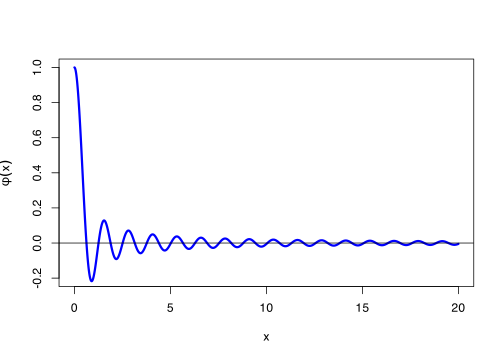
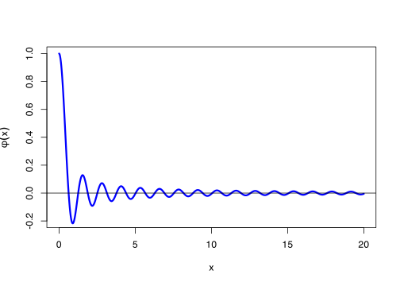

Code for drawing this graph
phi <- function(x) sin(5 * x) / (5 * x)
curve(
phi, n = 10001, from = 0, to = 20,
lwd = 3, col = "blue",
xlab = "x", ylab = expression(phi(x)), ylim = c(-0.2, 1)
)
abline(h = 0)
\[ \newcommand{\Exg}{\operatorname{\mathbb{E}}} \newcommand{\Ex}{\mathbb{E}} \newcommand{\Ind}{\mathbb{I}} \newcommand{\Var}{\operatorname{Var}} \newcommand{\Cov}{\operatorname{Cov}} \newcommand{\Corr}{\operatorname{Corr}} \newcommand{\ee}{\mathrm{e}} \]
\[ \]
So far, we have looked at estimating \(\Exg \phi(X)\) using samples \(X_1, X_2, \dots, X_n\) that are from the same distribution as \(X\). Importance sampling is based on the idea of taking samples \(Y_1, Y_2, \dots, Y_n\) from some different distribution \(Y\), but then making an appropriate adjustment, so that we’re still estimating \(\Exg \phi(X)\).
Why might we want to do this? There are two main reasons:
First, we might not be able to sample from \(X\), so we might be forced into sampling from some other distribution \(Y\) instead. So far, \(X\) has always been a nice pleasant distribution, like a normal, exponential or continuous uniform distribution, for which we can use R’s built-in sampling function. But what if \(X\) were instead a very unusual or awkward distribution? In that case, we might not be able to sample directly from \(X\), so would be forced into sampling from a different distribution.
Second, we might prefer to sample from a distribution other than \(Y\). This might be the case if \(\phi(x)\) varies a lot over different values of \(x\). There might be some areas of \(x\) where it’s very important to get an accurate estimation, because they contribute a lot to \(\Exg\phi(X)\), so we’d like to “oversample” (take lots of samples) there; meanwhile, other areas of \(x\) where it is not very important to get an accurate estimation, because they contribute very little to \(\Exg\phi(X)\), so we don’t mind “undersampling” (taking relatively few samples) there. Then we could sample instead from a distribution \(Y\) that concentrates on the most important areas for \(\phi\); although we’ll need to make sure to adjust our estimator by “down-weighting” the places that we have oversampled.
Consider, for example, trying to estimate \(\Exg\phi(X)\) where \(X\) is uniform on \([0, 20]\) and \(\phi\) is the function shown below.
phi <- function(x) sin(5 * x) / (5 * x)
curve(
phi, n = 10001, from = 0, to = 20,
lwd = 3, col = "blue",
xlab = "x", ylab = expression(phi(x)), ylim = c(-0.2, 1)
)
abline(h = 0)
We can see that what happens for small \(x\) – say, for \(x\) between 0 and 2, or so – will have an important effect on the value of \(\Exg \phi(X)\), because that where \(\phi\) has the biggest (absolute) values. But what happens for large \(x\) – say for \(x \geq 10\) or so – will be much less important for estimating \(\Exg\phi(X)\). So it seems wasteful to have all values in \([0, 20]\) to be sampled equally, and it would seem to make sense to take more samples from small values of \(x\).
This is all very well in practice, but how exactly should we down-weight those over-sampled areas?
Think about estimating \(\Exg \phi(X)\). Let’s assume that \(X\) is continuous with probability density function \(f\). (Throughout this lecture and the next, we will assume all our random variables are continuous. The arguments for discrete random variables are very similar – just swap probability density functions with probability mass functions and integrals with sums. You can fill in the details yourself, if you like.) Then we are trying to estimate \[ \Exg \phi(X) = \int_{-\infty}^{+\infty} \phi(x)\,f(x)\,\mathrm{d}x = \int_{-\infty}^{+\infty} \phi(y)\,f(y)\,\mathrm{d}y . \] (In the second equality, we merely changed the “dummy variable” from \(x\) to \(y\), as we are at liberty to do.)
Now suppose we sample from some other continuous distribution \(Y\), with PDF \(g\). If we estimate \(\Exg \psi(Y)\), say, for some function \(\psi\), then we are estimating \[\Exg \psi(Y) = \int_{-\infty}^{+\infty} \psi(y)\,g(y) \, \mathrm{d}y = \int_{-\infty}^{+\infty} \psi(x)\,g(x) \, \mathrm{d}x . \]
But we want to be estimating \(\Exg\phi(X)\), not \(\Exg\psi(Y)\). So we will need to pick \(\psi\) such that \[ \Exg \phi(X) = \int_{-\infty}^{+\infty} \phi(y)\,f(y)\,\mathrm{d}y = \int_{-\infty}^{+\infty} \psi(y)\,g(y) \, \mathrm{d}y = \Exg \psi(Y) . \] So we need to pick \(\psi\) such that \(\phi(y)\,f(y) = \psi(y)\,g(y)\). That means that we should take \[\psi(y) = \frac{\phi(y) f(y)}{g(y)} = \frac{f(y)}{g(y)}\,\phi(y). \]
So we could build a Monte Carlo estimate for \(\Exg \phi(X)\) instead as a Monte Carlo estimate for \[ \Exg \psi(Y) = \Exg \left(\frac{f(Y)}{g(Y)}\,\phi(Y) \right) . \]
There is one other thing: we need to be careful of division by \(0\) errors. So we should make sure that \(g\) is only 0 when \(f\) is 0. In other words, if it’s possible for \(X\) to take some value, then it must be possible for \(Y\) to take that value too.
We are finally ready to define our estimator.
Definition 8.1 Let \(X\) be a continuous random variable with probability density function \(f\), let \(\phi\) be a function, and write \(\theta = \Exg\phi(X)\). Let \(Y\) be a continuous random variable with probability desnity function \(g\), where \(g(y) > 0\) for all \(y\) where \(f(y) > 0\). Then the importance sampling Monte Carlo estimator \(\widehat\theta_n^{\mathrm{IS}}\) of \(\theta\) is \[ \widehat{\theta}_n^{\mathrm{IS}} = \frac{1}{n} \sum_{i=1}^{n} \frac{f(Y_i)}{g(Y_i)}\, \phi(Y_i) ,\] where \(Y_1, Y_2, \dots, Y_n\) are independent random samples from \(Y\).
We can think of this as taking a weighted mean of the \(\phi(Y_i)\)s, where the weights are \(f(Y_i)/g(Y_i)\). So if a value \(y\) is more likely under \(Y\) than under \(X\), then \(g(y)\) is big compared to \(f(y)\), so \(f(y)/g(y)\) is small, and \(y\) gets a low weight. If a value \(y\) is less likely under \(Y\) than under \(X\), then \(g(y)\) is small compared to \(f(y)\), so \(f(y) / g(y)\) is big, and it gets a high weight. Thus we see that the weighting compensates for values that are likely to be over- or under-sampled.
Example 8.1 Let \(X \sim \operatorname{N}(0,1)\) be a standard normal. Suppose we want to estimate \(\mathbb P(X > 4)\). We could do this the standard Monte Carlo way by sampling from \(X\) itself. \[ \widehat{\theta}_n^{\mathrm{MS}} = \frac{1}{n} \sum_{i=1}^n \mathbb I_{[4,\infty)}(X_i) . \]
However, this will not be a good estimator. To see the problem, lets run this with \(n = 100\,000 = 10^5\) samples, but do it 10 times, and see what all the estimates are.
n <- 1e5
MCest <- rep(0, 10)
for (i in 1:10) MCest[i] <- mean(rnorm(n) > 4)
MCest [1] 1e-05 0e+00 1e-05 1e-05 0e+00 2e-05 4e-05 3e-05 1e-05 0e+00We see a big range of values. I get different results each time I run it, but anything between \(1 \times 10^{-5}\) and \(8 \times 10^{-5}\), and even \(0\), comes out fairly regularly as the estimate. The problem is that \(X > 4\) is a very rare event – it only comes out a handful of times (perhaps 0 to 8) out of the 100,000 samples. This means our estimate is (on average) quite inaccurate.
It would be better not to sample from \(X\), but rather to sample from a distribution that is greater than 4 a better proportion of the time. We could try anything for this distribution \(Y\), but to keep things simple, I’m going to stick with a normal distribution with standard deviation 1. I’ll want to increase the mean, though, so that we sample values bigger than 4 more often. Let’s try importance sampling with \(Y \sim \operatorname{N}(4,1)\).
The PDFs of \(X \sim \operatorname{N}(0,1)\) and \(Y \sim \operatorname{N}(4,1)\) are \[f(x) = \frac{1}{\sqrt{2\pi}} \exp\big(-\tfrac12 x^2\big) \qquad g(y) = \frac{1}{\sqrt{2\pi}} \exp\big(-\tfrac12 (y-4)^2\big) , \] so the relevant weighting of a sample \(y\) is \[ \frac{f(y)}{g(y)} = \frac{\exp\big(-\tfrac12 y^2\big)}{\exp\big(-\tfrac12 (y-4)^2\big)} = \exp \big(\tfrac12\big(-y^2 + (y-4)^2\big)\big) = \exp(-4y+8) . \] So our importance sampling estimate will be \[ \widehat{\theta}_n^{\mathrm{IS}} = \frac{1}{n} \sum_{i=1}^n \mathrm{e}^{-4Y_i +8} \, \mathbb I_{[4,\infty)}(Y_i) . \]
Let’s try this in R. Although we could use the function \(\mathrm{e}^{-4y+8}\) for the weights, I’ll do this by using the ratios of the PDFs directly in R (just in case I made a mistake…).
n <- 1e5
pdf_x <- function(y) dnorm(y, 0, 1)
pdf_y <- function(y) dnorm(y, 4, 1)
samples_y <- rnorm(n, 4, 1)
ISest <- mean((pdf_x(samples_y) / pdf_y(samples_y)) * (samples_y > 4))
ISest[1] 3.143342e-05The following theorem should not by now be a surprise.
Theorem 8.1 Let \(X\) be a continuous random variable with probability density function \(f\), let \(\phi\) be a function, and write \(\theta = \Exg\phi(X)\). Let \(Y\) another continuous random variable with probability density function with probability density function \(g\), such that \(g(y) = 0\) only when \(f(y) = 0\). Let \[ \widehat{\theta}_n^{\mathrm{IS}} = \frac{1}{n} \sum_{i=1}^n \frac{f(Y_i)}{g(Y_i)}\,\phi(Y_i) \] be the importance sampling Monte Carlo estimator of \(\theta\). Then:
\(\widehat{\theta}_n^{\mathrm{IS}}\) is unbiased, in that \(\operatorname{bias}\big(\widehat{\theta}_n^{\mathrm{IS}}\big) = 0\).
The variance of of \(\widehat{\theta}_n^{\mathrm{IS}}\) is \[ \operatorname{Var}\big(\widehat{\theta}_n^{\mathrm{IS}}\big) = \frac{1}{n} \operatorname{Var}\left( \frac{f(Y)}{g(Y)}\,\phi(Y) \right). \]
The mean-square error of \(\widehat{\theta}_n^{\mathrm{IS}}\) is \[ \operatorname{MSE}\big(\widehat{\theta}_n^{\mathrm{IS}}\big) = \frac{1}{n} \operatorname{Var}\left( \frac{f(Y)}{g(Y)}\,\phi(Y) \right) . \]
The root-mean-square error of \(\widehat{\theta}_n^{\mathrm{IS}}\) is \[ \operatorname{RMSE}\big(\widehat{\theta}_n^{\mathrm{IS}}\big) = \frac{1}{\sqrt{n}} \,\sqrt{\operatorname{Var}\left( \frac{f(Y)}{g(Y)}\,\phi(Y) \right)}. \]
Proof. Part 1 follows essentially the same argument as our discussion at the beginning of this lecture. We have \[ \Ex \left( \frac{1}{n} \sum_{i=1}^n \frac{f(Y_i)}{g(Y_i)}\,\phi(Y_i) \right) = \frac{1}{n}\, n\, \Ex \left(\frac{f(Y)}{g(Y)}\,\phi(Y)\right) = \Ex \left(\frac{f(Y)}{g(Y)}\,\phi(Y)\right) . \] But \[ \Ex \left(\frac{f(Y)}{g(Y)}\,\phi(Y)\right) = \int_{-\infty}^{+\infty} \frac{f(y)}{g(y)}\,\phi(y)\,g(y)\,\mathrm{d}y = \int_{-\infty}^{+\infty} \phi(y) \, f(y) \, \mathrm{d}y = \Exg \phi(X) . \] This last step is because \(f\) is the PDF of \(X\); it doesn’t matter whether the dummy variable in the integration is \(x\) or \(y\). Hence the estimator is unbiased.
Parts 2 to 4 follow in the usual way.
As we are now used to, we can estimate the variance using the sample variance.
Example 8.2 We continue Example 8.1, where we are estimating \(\mathbb P(X > 4)\) for \(X \sim \operatorname{N}(0,1)\).
For the standard Monte Carlo method, we estimate the root-mean-square error as
n <- 1e5
MC_MSE <- var(rnorm(n) > 4) / n
sqrt(MC_MSE)[1] 2.236023e-05As before, this still varies a lot, but it seems to usually be about \(2 \times 10^{-5}\).
For the importance sampling method, we estimate the mean-square error as
n <- 1e5
pdf_x <- function(x) dnorm(x, 0, 1)
pdf_y <- function(y) dnorm(y, 4, 1)
samples_y <- rnorm(n, 4, 1)
IS_MSE <- var((pdf_x(samples_y) / pdf_y(samples_y)) * (samples_y > 4)) / n
sqrt(IS_MSE)[1] 2.131441e-07This is about \(2 \times 10^{-7}\). This is about 100 times smaller than for the standard method: equivalent to taking about 10,000 times as many samples! That’s a huge improvement, which demonstrates the power of importance sampling.
Next time: We continue our study of importance sampling – and complete our study of Monte Carlo estimation, for now – by considering how to pick a good distribution \(Y\).
Summary:
Importance sampling estimates \(\Exg \phi(X)\) by sampling from a different distribution \(Y\).
The importance sampling estimator is \({\displaystyle \widehat{\theta}_n^{\mathrm{IS}} = \frac{1}{n} \sum_{i=1}^n \frac{f(Y_i)}{g(Y_i)}\,\phi(Y_i)}\).
The importance sampling estimator is unbiased with mean-square error \[ \operatorname{MSE}\big(\widehat{\theta}_n^{\mathrm{IS}}\big) = \frac{1}{n} \operatorname{Var}\left( \frac{f(Y)}{g(Y)}\,\phi(Y) \right) . \]
Solutions are now available for Problem Sheet 1.
Read more: Voss, An Introduction to Statistical Computing, Subsection 3.3.1.